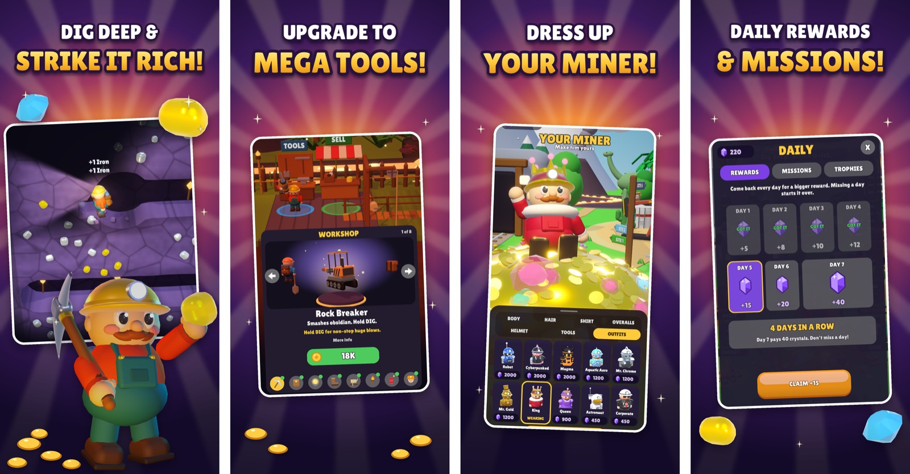

Mohamad Safieddine, Project Portfolio
I design, build and launch digital products: I set the vision, write the requirements, test with real data and manage the release. OOF, my car meet app, has been live on the App Store since May 2026, Deep Mine, a 3D iOS game, went live there in November 2026, and FinanceFlow is a quoting tool I built for Performance Lexus. I work with generative AI every day, Claude above all.
Below: each product at a glance, the skills my work shows, and the story behind each one.
At a glance
Five products: four iOS apps, from a social app to a 3D game, and a quoting tool for a car dealership. Ratings are from the Canadian App Store on November 10, 2026.
| Product | What it does | Built with | My role | Status |
|---|---|---|---|---|
| OOF - Car meets | Find car meets near you, sorted by distance, and connect with the local car scene | React Native, Expo, Firebase, GitHub | Founder and builder, published under my own developer account | Live since May 21, 2026 |
| Deep Mine: Dig and Upgrade | 3D mining game with ten worlds, tool upgrades, daily rewards, trophies and outfits | Unity, C#, App Store Connect API, Claude Code, GitHub | Product owner and builder | Live since November 11, 2026; update 1.1 with four more worlds live since November 12, 2026 |
| WordHaven: Word Puzzle Creator | Build word puzzles and share them by link or code, with a daily puzzle and a story mode | iOS | Co-founder; UI designer, sound and level creator | Live since March 12, 2026; 5.0 stars from 8 ratings |
| Spensei: Spending Tracker | Logs each Apple Pay purchase on the phone and shows what is safe to spend today, with no bank login | iOS, Apple Shortcuts | Co-founder | Live since July 5, 2026, now version 1.5; 5.0 stars from 12 ratings |
| FinanceFlow | Builds a car buyer's finance product menu in four packages, with payments, and prints it as a customer-ready PDF | Offline web app in one file: React, TypeScript, Vite, Claude Code | Built it for Performance Lexus, through my company, Bluegill Innovations | Demo approved by the dealership; version 1.2, October 2026 |
What I can do
Each row is a skill and where I have used it on a real product. I can walk through any of them in an interview.
| Skill | Where I have used it |
|---|---|
| Product vision and roadmap | Planned the Deep Mine launch and update 1.1 (four new worlds, a holiday gift and a reworked economy), and moved the in-app shop to a later update so 1.1 could ship sooner. Kept a ranked list of what was left after every change and decided what shipped. |
| Testing and decisions from data | Set up a test bot that plays each Deep Mine world from start to finish and reports the minutes per world and when each upgrade is bought. Used its numbers to set prices and pacing. 339 automated tests run before every build. |
| App Store listings and discoverability | Wrote the App Store listings: name, subtitle, keywords, description, category and 20 captioned screenshots for iPhone and iPad. |
| Requirements and outside partners | Defined the requirements for each feature and reviewed every change against them. Worked through Apple App Review, App Store Connect, Google AdMob and Expo's cloud build service. |
| Releases and data migrations | Tested Deep Mine on TestFlight across several builds before submitting it. Planned save-file upgrades so players' progress carries safely into each new version. Moved Performance Lexus's spreadsheet quote menu into FinanceFlow and checked its payment math against their real menus. |
| Writing standards and team training | Set one writing standard for every word players read in Deep Mine: short, plain and free of jargon. As General Manager at Hasty Market (2019 to 2023), recruited, trained and supervised the team. |
| Accessibility | Rewrote all of Deep Mine's text in plain language and made its buttons and labels larger and easier to tap. |
| Generative AI | Build with Claude every day. Designed a multi-agent workflow (a planner, specialist agents, review gates and a spending cap) that planned and built two new Deep Mine worlds. |
| Websites (HTML and CSS) | Built and published Deep Mine's privacy policy, terms and support pages, and OOF's website, on GitHub Pages. |
| Business and client work | Ran a convenience store as General Manager for four years and grew its revenue by 40%. Built FinanceFlow with a car dealership's finance team, shaped by their feedback over several demos. |
Deep Mine: from idea to the App Store
Deep Mine is a 3D mining game for iPhone and iPad: dig down, sell what you find, buy better tools and move through ten worlds, from a green meadow to the Moon. I own the product end to end. Claude Code is my engineering partner: I set the direction, write the specs, play-test every change and decide what ships.
It has been live on the App Store since November 11, 2026, free, under my own developer account.

Four of the 20 App Store screenshots I captioned and laid out for Deep Mine.
What I did
Vision and roadmap. Planned the 1.0 launch, then update 1.1, live November 12: four new worlds, a December gift for early players, and a fresh start at every site so coins no longer carry over, after players told me the game went by too fast. I moved the in-app shop to a later update so 1.1 could ship sooner.
Decisions from data. A test bot plays each world from start to finish and reports minutes per world and when each upgrade is bought. After play-testing I made the rocket launcher stronger; the bot then showed one world dropping from 64 to 32 minutes, and I chose the trade-off with that number in hand.
Quality. 339 automated tests run before every build, and every change is played in the real game before release. When play-testing turns up a bug, the fix comes with a test that proves it stays fixed.
Release management. Shipped test builds on TestFlight, set up App Store Connect (privacy labels, age rating, pricing, availability in 148 countries) and answered an App Review request for more information. Version 1.0 was approved and released on November 11, 2026.
Store presence. Wrote the App Store listing and 20 captioned screenshots, and published the privacy policy, terms and support pages on GitHub Pages.
Automation. Scripts talk to Apple's App Store Connect API to upload screenshots and listing text and to check review status, so updates take minutes, not hours.
By the numbers: 10 live worlds, 339 automated tests, 20 store screenshots and 1 multi-agent AI workflow.
WordHaven: Word Puzzle Creator
WordHaven turns word puzzles into something people make and share. A player picks the words and a background, names the puzzle and sends it to a friend, who plays it from a link or a code.
It also has an Explore page of puzzles made by other players, a daily puzzle and a story mode, with no ads, no timers and no account needed. It has been live on the App Store since March 12, 2026, rated 5.0 from 8 ratings, published under Husein Mokbel's developer account.
My role: Co-founder. I designed the interface, coordinated the sound and created the puzzle levels.
OOF - Car meets: a community app I launched
I built OOF because local car scenes were scattered across group chats and social pages, and people drove hours without knowing what was happening in their own city. It brings meets, people and builds into one app. It has been live on the App Store since May 21, 2026, free, under my own developer account.
What it does
Find meets near you, sorted by distance, with the location, date, host, car types and head count. Join in one tap.
The OOF Card, each member's profile: name, city and meet stats on the front, and the car's specs and full mods list on the back.
Build your network by OOF ID or by scanning a QR code in person at a meet.
Host a meet in seconds, with a location, date, car types and a visibility radius.
A live map of active meets around the world.
How I built it: React Native and Expo in TypeScript, Firebase for sign-in, the database and photo storage, and Expo's cloud build service to sign and upload to the App Store. The code is on GitHub (17 commits from April 19 to May 24, 2026), and the app's website is on GitHub Pages.
Spensei: Spending Tracker
Spensei is a spending coach that tells you one number: what is safe to spend today. Each Apple Pay purchase lands in the app seconds after you pay, through a one-time Apple Shortcuts setup, with no bank login. Purchases stay on the phone, not on a server.
Left today: a monthly limit, or pay minus bills, turned into one number for the day, with the working shown.
Coaching: a morning note on yesterday, belts for days on track, a month in review, and spending habits that add up.
Protection: reminders before subscriptions renew or free trials end, and a heads-up when a shop charges twice.
Ask about your money: a plain-language chat whose figures are calculated first, then explained, and that asks before sending anything.
Spensei Pro: a monthly or yearly subscription with a 7-day free trial.
It has been live on the App Store since July 5, 2026, now on version 1.5, rated 5.0 from 12 ratings, published under Husein Mokbel's developer account.
My role: Co-founder.
FinanceFlow: a quoting tool built for Performance Lexus
I built FinanceFlow for the finance office at Performance Lexus, where I work, to replace the Excel sheet its managers used to build product menus for customers. It runs as one file on a dealership PC, with no server and no internet, and prints a customer-ready PDF menu.
The menu: four packages side by side, with products added from a searchable catalog, dragged between packages and repriced for each deal.
The numbers: monthly, bi-weekly and weekly payments with tax, using the same loan math as the dealership's spreadsheet, checked against its real menus.
At the desk: a presentation mode for when the customer is sitting across from the manager.
Built with the client: a first demo the dealership approved, then several rounds of changes from the finance team's own list, now at version 1.2.
Data and quality: rebuilt the product catalog from the dealership's revised workbook, flagged pricing and description errors in it, and added automated browser tests for every editing path and the PDF export.
Built with React, TypeScript and Vite, through my company, Bluegill Innovations.
How I work
Every change goes through the same steps, so nothing reaches players untested or unexplained.
Define it. A short spec: what the player should see, and how we will know it works.
Build it with AI. Claude Code writes and changes the code to the spec; I review the result.
Test it. The automated tests run, then I play the change in the real game, on the screens a player would use.
Record it. The decision and the reason go into the project's documentation. Deep Mine's runs to over 500 lines, kept current with every change.
Ship it. A test build on TestFlight, then App Review, then a release I press myself.
GitHub. I keep code and websites on GitHub, including Deep Mine's full Unity project, with its tests and tools, in a private repository. OOF's source lives there (17 commits, April to May 2026), and Deep Mine's privacy policy, terms and support pages are published from it on GitHub Pages.
AI at scale. For Deep Mine's two newest worlds I ran a multi-agent workflow: a planner split the work among specialist agents for design, art, code and review, each result passed a review gate before it was kept, and the run stayed within a spending cap I set ($83 of $100).
Links
| Link | What it shows |
|---|---|
| OOF on the App Store | My car meet app, live |
| OOF website | The app's site, on GitHub Pages |
| OOF source code | The code and its history on GitHub |
| Deep Mine on the App Store | My 3D mining game, live |
| Deep Mine support site | Privacy policy, terms and support, on GitHub Pages |
| WordHaven on the App Store | The word puzzle app, live |
| Spensei on the App Store | The spending coach, live |
| My GitHub | All my public projects |